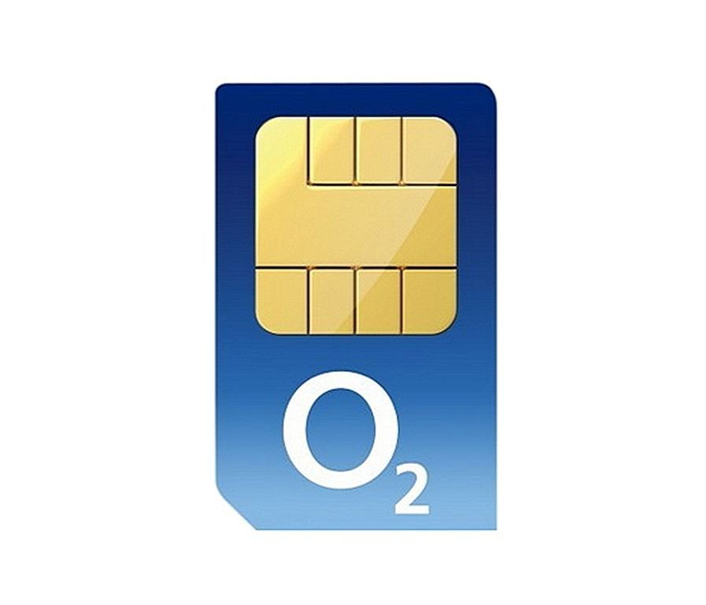

12. November

O2 UK startet Household Saver für Familientarife Was das für uns heißtBis zu 15 Pfund monatliche Ersparnis bei Haushaltsbündelung in UK - zeigt das Potenzial für aggressivere Kombi-Rabatte in unserem Festnetz- und Mobilfunkportfolio. Apple iPhone 17 256 GB 686,09 €Saturn/MediaMarkt · o2-Netz günstiger als Vodafone Promo Wechsel- oder Altgerätprämie Telekom Deutschland Mobilfunk-Bonus mit CashbackIn zwei Minuten
-
Verdopplung auf 250 GB ohne Preiserhöhung im Budget-Bereich - zwingt uns zur Überprüfung unseres eigenen Datenvolumens in der Allnet-M-Stufe.congstar ↗
-
Aggressive Hardware-Bundles ab 1,36 Euro eff. im eigenen Netz - setzt den Standard für kommende Vermarktungsaktionen im Weihnachtsgeschäft.Vodafone Group ↗
-
Google bringt Gemini-Smartglasses ab 395 US-Dollar auf den Markt - treibt die Nachfrage nach eSIM-fähigen Wearable-Tarifen.Google AI ↗

Auf einen Blick
- Betreiber in Europa und Lateinamerika positionieren sich mit aggressiven Hardware-Bundles und unbemerkten Datenvolumen-Erweiterungen frühzeitig für das Weihnachtsgeschäft.
- Künstliche Intelligenz wandert von reinen Cloud-Diensten in autonome Verkaufsagenten, Netzautomatisierungen und netzwerkübergreifende Consumer-Tarife.
- Satellitenbetreiber und alternative Infrastrukturanbieter erhöhen durch mobile Router und Direktverbindungen den Druck auf klassische Festnetz- und FWA-Produkte.
Themen der Woche

Das Wichtigste
In dieser Woche treiben Telekommunikationskonzerne weltweit ihre Vorbereitungen für das Jahresendgeschäft durch aggressive Tarif- und Hardware-Kombinationen voran. Netzbetreiber in Europa und Lateinamerika verknüpfen Breitband- und Mobilfunkanschlüsse zunehmend mit Streaming-Diensten, Gaming-Angeboten oder stark rabattierten Premium-Smartphones, um in einem wettbewerbsintensiven Umfeld Margen zu sichern. Gleichzeitig schreitet die Automatisierung von Netz- und Vertriebsprozessen durch Künstliche Intelligenz voran: Anbieter setzen vermehrt auf autonome KI-Agenten im Direktvertrieb und treiben den Umbau ihrer Infrastruktur in Richtung autonomer Netzstufen voran. Regulatorische Debatten um Cybersicherheitsgesetze, Plattformregulierung und Frequenzvergaben begleiten den operativen Betrieb. Insgesamt zeigt sich ein Brachentrend hin zu konvergenter Kundenbindung und höherer Betriebseffizienz durch Cloud- und Automatisierungslösungen.
Was wichtig ist
- Vodafone Group Vodafone schaltet Pay-TV-Sender Crime + Investigation für alle frei
- Vodafone UK Vodafone UK startet grossflächige Black-Friday-Frühstartkampagne
-
Vodafone Group
Vodafone erhöht Empfehlungsbonus für Kabel-Tarife auf 260 Euro
Was das für uns heißtErhöhter Kombi-Bonus von bis zu 260 Euro bei Kabel-Empfehlungen - direkt als Vorlage für unsere eigenen Festnetz-Aktionen nutzbar.
-
Starlink
Starlink erreicht weltweit 13,6 Millionen Kunden
Was das für uns heißtWwachsender Druck durch Satellitenbreitband auf unsere Festnetz- und FWA-Produkte - erfordert gezielte Geschwindigkeits- und Latenzvorteile im eigenen Portfolio.
-
Google Fi Wireless
Google Fi startet automatischen Wechsel zwischen zwei 5G-Netzen
Was das für uns heißtAutomatische Umschaltung zwischen verschiedenen Netzen in einem Standardtarif - eine spannende Option zur Steigerung der gefühlten Netzqualität für unsere Premium-Kunden.
-
Orange
Orange startet Super-Apps mit integrierten KI-Diensten
Was das für uns heißtZwei netzunabhängige Super-Apps mit integrierten KI-Diensten von Orange - erhöht den Druck auf unsere eigenen App-Funktionalitäten im Kundenservice.
-
ACT Fibernet
ACT Fibernet bietet kostenlose Geschwindigkeitsupgrades an
Was das für uns heißtKostenlose Bandbreiten-Upgrades als Kundenbindungsinstrument - Vorlage für eine eigene Loyalitätskampagne im Festnetz zur Senkung der Wechselquote.

Die wichtigsten Meldungen
O2 UK - Household Saver für Familientarife eingeführt (Tarif/Pricing, Dringlichkeit 5/5) O2 UK hat neue Household Saver-Tarife eingeführt, die bisherige Multisim-Angebote für Familien ablösen. Kunden aus demselben Haushalt können durch die Zusammenlegung ihrer Mobilfunkpläne bis zu 15 Pfund pro Monat sparen. Der Schritt zielt auf eine langfristige Bindung von Mehrpersonenhaushalten ab O2 UK - Household Saver mobile tariffs for families – replaces Multisave.
Google AI - Start der Gemini-Smartglasses ab 395 US-Dollar (Produktlaunch, Dringlichkeit 5/5) Google hat gemeinsam mit Samsung, Gentle Monster und Warby Parker eine neue Serie KI-gestützter Smartglasses auf Basis von Google Gemini vorgestellt. Die Geräte kosten ab 395 beziehungsweise 449 US-Dollar und setzen eine kontinuierliche mobile Datenverbindung voraus. Damit treiben die Partner die Nachfrage nach eSIM-fähigen Wearable-Tarifen und hoher Bandbreite im Mobilfunknetz voran Google pushes privacy angle as Gemini-powered smartglasses debut starting at $395.
G.Network - Autonomer Glasfaservertrieb durch KI-Agenten (Produktlaunch, Dringlichkeit 4/5) Der Londoner Glasfaseranbieter G.Network hat einen auf Salesforce basierenden KI-Agenten namens g eingeführt, der erste End-to-End-Glasfaserbestellungen ohne menschliches Eingreifen abgewickelt hat. Das Projekt dient als Vorlage zur Verschlankung von Online-Vertriebsprozessen und zur Steigerung der Conversion-Rate im Festnetzgeschäft London full fibre broadband ISP G.Network make first sales using AI agent.
Orange - Super-Apps mit integrierten KI-Diensten gestartet (Produktlaunch, Dringlichkeit 4/5) Orange hat zwei neue Super-Apps für die Marken Orange und Sosh veröffentlicht, die netzunabhängig offen stehen und neue KI-Dienste integrieren. Die Anwendungen bündeln Service-Funktionen und künstliche Intelligenz auf einer Plattform, um die Kundeninteraktion zu vereinfachen Produits et services Orange launches two “Orange” and “Sosh” super apps, open to all, featuring a new AI service 10/11/2026.
Starlink - Weltweite Kundenzahl auf 13,6 Millionen gestiegen (Produktlaunch, Dringlichkeit 4/5) Starlink verzeichnete weltweit 13,6 Millionen Abonnenten, während die US-Upload-Geschwindigkeiten im Jahresvergleich um 42 Prozent zulegten. Diese Entwicklung unterstreicht den wachsenden Druck des Satellitenbreitbands auf klassische Festnetz- und Fixed-Wireless-Access-Produkte in ländlichen Regionen Starlink Subscribers Reach 13.6 Million as US Upload Speeds Jump 42%, Challenging Cable, DSL and 5G FWA.
Digi - 30-Frist für WiFi-7-Router und Strafgebühren (Tarif/Pricing, Dringlichkeit 4/5) Der Billiganbieter Digi hat seine Bedingungen für XGS-PON-Kunden geändert, die einen WiFi-7-Router für 30 Euro erwerben: Die Selbstinstallation muss innerhalb von 30 Tagen erfolgen, andernfalls wird die Bestellung storniert und es drohen Pönalen von bis zu 150 Euro für das Equipment. Die Maßnahme soll ungenutzte Hardware-Bestände im Markt minimieren Digi se pone serio con los clientes que pagan por un router WiFi 7: tienen 30 días para instalarlo o tendrán un problema.
Bitkom - Warnung vor neuen Sicherheitsgesetzen in Deutschland (Regulierung, Dringlichkeit 4/5) Der Digitalverband Bitkom hat die im Bundestag diskutierten Gesetzentwürfe zur Stärkung der Cybersicherheit und die Nachrichtendienstrechtsreform kritisiert. Kritisiert werden weitreichende Zugriffs- und Mitwirkungspflichten sowie unzureichende richterliche Kontrollen bei aktiver Cyberabwehr Bitkom zu Gesetzentwürfen für neue deutsche Sicherheitsarchitektur.
Regierung Ghana - Strikte Frist für 70 Prozent 5G-Abdeckung (Netz/Technologie, Dringlichkeit 4/5) Ghana hat das offizielle Ziel ausgegeben, bis März 2027 mehr als 70 Prozent des Landes mit 5G-Netzen zu versorgen, einschließlich des Baus von 2.016 ländlichen Standorten. Das Vorhaben verdeutlicht, wie staatliche Vorgaben den Infrastrukturausbau in Schwellenländern beschleunigen Ghana Sets March 2027 Deadline for 70% 5G Network Coverage.

Europa
Europäische Telekommunikationsanbieter starten mit aggressiven Hardware-Bundles, verdoppelten Datenvolumina und gezielten Bonusaktionen in die Vorweihnachtszeit. Gleichzeitig zwingen steigende Datenmengen durch Gaming-Downloads und der anhaltende Preisdruck im Discount-Segment die Betreiber zu striktem Kapazitätsmanagement und neuen Kundenbindungsmaßnahmen.
Congstar hat bei der Allnet Flat M das Datenvolumen unbemerkt von 125 GB auf 250 GB erhöht, ohne den monatlichen Preis anzupassen Congstar verdoppelt unbemerkt Datenvolumen der Allnet Flat M. Deinhandy bietet das Samsung Galaxy S25 und Xiaomi 17T Pro in Kombination mit dem Otelo-Tarif für effektiv ab 1,36 Euro monatlich an Deinhandy startet Black-Friday-Bundles im Vodafone-Netz ab 1,36 Euro. Vodafone UK startete eine umfassende Frühstart-Kampagne mit Ersparnissen von bis zu 1.568 Pfund bei Flaggschiff-Smartphones Vodafone UK startet grossflächige Black-Friday-Frühstartkampagne. Vodafone Deutschland verzeichnete durch große Spiele-Downloads wie den GTA-VI-Preload spürbare Lastspitzen im Netz, die stabil verarbeitet wurden GTA-VI-Preload treibt Datenverkehr im Vodafone-Netz nach oben. Vodafone erhöhte zudem den Empfehlungsbonus für Kabel-Tarife durch kombinierte Prämien auf bis zu 260 Euro Vodafone erhöht Empfehlungsbonus für Kabel-Tarife auf 260 Euro und schaltet den Pay-TV-Sender Crime + Investigation Ende November für alle TV-Kunden frei Vodafone schaltet Pay-TV-Sender Crime + Investigation für alle frei.
Iliad startete einen 200-GB-5G-Tarif für 9,99 Euro im Monat auf Lebenszeit Iliad startet 200 GB 5G Tarif für 9,99 Euro. O2 Czech Republic führte ein eigenständiges 5G-Netz unter der Bezeichnung 5G+ für Gigabit-Geschwindigkeiten ein O2 Czech Republic führt flächendeckend Standalone-5G ein. Play bietet seinen Kunden den Schutzdienst gegen Phishing in den ersten zwei Monaten kostenlos an Play bietet Internetsicherheit zwei Monate gratis. Starlink stellte den Mini-2-Router mit Wechselakku für 999 US-Dollar vor Starlink stellt Mini 2 Router mit Akku vor. Spanien führte im Rahmen eines Anti-Betrugs-Plans die verpflichtende Vorwahl 400 für kommerzielle Anrufe ein Spanien führt verpflichtende Vorwahl 400 für kommerzielle Anrufe ein. Plus startete in Polen eine Weihnachtsoffensive mit starken Rabatten auf Motorola-Smartphones Polnischer Anbieter startet Weihnachtsoffensive mit Smartphone-Rabatten. O2 Telefonica verzeichnete mäßige Quartalszahlen und treibt den Stellenabbau voran Schwache Quartalszahlen bei o2 und anhaltender Stellenabbau.

Deutschland
- Deutsche Telekom Die Deutsche Telekom treibt aktuell gezielt den Ausbau ihres KI- und Cloud-Geschäfts voran, investiert knapp 250 Millionen Euro in die Verdopplung der Rechenkapazitäten ihrer ausverkauften…
- Telefónica / O2 Telefónica und O2 verzeichnen solide operative Fortschritte im Zuge ihrer Strategieanpassungen, berichten über gestiegene Gewinne und optimierte Jahresziele für 2026. Gleichzeitig…
- 1&1 1&1 treibt aktuell massiv seine Marktexpansion im Festnetz- und Mobilfunkbereich voran, untermauert durch starke Testergebnisse wie Platz 2 im IMTEST Mobilfunk-Netztest 2026. Durch…

Lateinamerika
Lateinamerikanische Telekommunikationsanbieter setzen auf Infrastrukturkonsolidierungen, Cloud-Migrationen und zielgerichtete Entertainment-Bundles für saisonale Verkaufsaktionen. Dabei prägen Partnerschaften mit großen Technologiekonzernen die Modernisierung der IT-Architekturen.
Millicom prüft die Übernahme des peruanischen Entel-Geschäfts mit 10,5 Millionen Kunden, was die anhaltende Konsolidierungswelle in der Region fortsetzt Millicom prüft Übernahme des Peru-Geschäfts von Entel. Amazon hat den KI-Einkaufsassistenten Alexa für Compras vor dem Verkaufsereignis El Buen Fin in Mexiko eingeführt Amazon startet KI-Shopping-Assistenten Alexa für Compras in Mexiko. Der mexikanische Betreiber izzi erweiterte seine Partnerschaft mit Oracle zur Vereinheitlichung von BSS- und OSS-Systemen auf der Oracle Cloud Infrastructure für über 19 Millionen Haushalte Mexikanischer Anbieter izzi weitet Oracle-Cloud-Nutzung aus. Google Fi Wireless startete in den USA ein System zum automatischen Wechsel zwischen zwei 5G-Netzen und WLAN-Verbindungen Google Fi startet automatischen Wechsel zwischen zwei 5G-Netzen. Der brasilianische Anbieter Unifique verzeichnete im dritten Quartal ein starkes Mobilfunkwachstum von 118 Prozent Brasilianischer Anbieter Unifique meldet Umsatzwachstum im Mobilfunk, während Brisanet hohe Smartphone-Preise als Hürde für die 5G-Migration moniert Brisanet sieht hohe Smartphone-Preise als Hürde für 5G. Vero integrierte Universal+ in konvergente Black-Friday-Pakete Vero integriert Universal+ in konvergente Black-Friday-Pakete, und SpaceX stellte die Starlink Mini 2 mit Wechselakku vor Starlink stellt tragbare Satellitenantenne mit Wechselakku vor.

Asien
Asiatische Betreiber und Technologiekonzerne treiben massive Investitionen in Rechenzentren, Glasfaserinfrastrukturen und KI-gestützte Netzautomatisierung voran. Gleichzeitig sorgen Leistungsvergleiche und kostenlose Upgrades für Bewegung im Festnetzmarkt.
KDDI hat ein mehrjähriges Programm zur vollständigen Netzautomatisierung mit Blue Planet gestartet, das 2028 auf Mobilfunknetze ausgeweitet wird KDDI automatisiert Fest- und Mobilfunknetze mit KI. Google investiert 15 Milliarden US-Dollar in den Ausbau von Rechenzentren und digitaler Infrastruktur in Malaysia Google investiert 15 Milliarden US-Dollar in Malaysia. Der indische Festnetzanbieter ACT Fibernet wertet bestehende Breitbandkunden im Rahmen einer Weihnachtsaktion kostenlos auf Tarife mit bis zu 500 Mbit/s auf ACT Fibernet bietet kostenlose Geschwindigkeitsupgrades an. Reliance Jio führte in offiziellen TRAI-Netztests in Mumbai die Download-Geschwindigkeiten an Reliance Jio führt Geschwindigkeitsmessungen in Mumbai an, und Cyient kooperiert mit 3-GIS zur cloudbasierten Verwaltung von über 650 Millionen Netzdatenelementen Cyient und 3-GIS kooperieren bei Netzdaten.

Afrika & Naher Osten
In der Region Afrika und Naher Osten beschleunigen staatliche Vorgaben und industrielle Nachfragen den Ausbau von Hochgeschwindigkeitsnetzen und privaten Campuslösungen.
stc kündigte in Bahrain das erste kommerzielle private 5G-Netzwerk des Landes für eine Schiffbaugruppe an Erstes kommerzielles privates 5G-Netz in Bahrain gestartet. Paratus Malawi bietet ab sofort hochohmige Verbindungen über Starlink-Dienste an, um ländliche Lücken zu schliessen Paratus Malawi startet Internetdienste mit Starlink.

Ozeanien
In Ozeanien konzentrieren sich die Netzbetreiber auf die Effizienzsteigerung bestehender Frequenzen, Automatisierungspartnerschaften und erweiterte Service-Modelle für Reisende.
Optus und Nokia testeten ein asymmetrisches 5G-Verfahren im 900-MHz-Band, das die Download-Geschwindigkeiten im Freien um bis zu 91 Prozent steigerte Optus testet erfolgreichen asymmetrischen 5G-Download. Air New Zealand und One New Zealand starteten gemeinsame eSIM-Reisetarife für in- und ausländische Kunden One NZ und Air New Zealand starten eSIM-Reisetarife. One New Zealand treibt zudem die Partnerschaft mit Nokia zur autonomen Netzwerkkontrolle voran One New Zealand setzt auf Nokia-Netzautomatisierung.

Technologie, Geräte & Regulierung
Die Lieferkette und das regulatorische Umfeld der Netzbetreiber werden stark von KI-Infrastruktur, Finanzierungsanforderungen und Sicherheitsanforderungen geprägt. Google stellte mit Samsung, Gentle Monster und Warby Parker intelligente Gemini-Brillen ab 395 US-Dollar vor und flankierte den Launch mit neuen Datenschutzrichtlinien Android stellt Datenschutzkonzepte für intelligente Brillen vor. Poste Italiane legte einen 600 Millionen Euro schweren Co-Investitionsfonds für neue Rechenzentren in Italien auf und hält nun 87 Prozent an Telecom Italia Poste Italiane startet 600-Millionen-Fonds für Rechenzentren. Südafrikas Ministerium hat das Konzept eines einheitlichen offenen Großhandelsnetzes (WOAN) nach über sieben Jahren offiziell aufgehoben Südafrika beendet das Projekt des offenen 5G-Großhandelsnetzes. Samsung Ads führte interaktive Werbeformate auf Smart-TVs ein Samsung führt interaktive Werbeformate für Smart-TVs ein, und die deutsche Plattform HD+ integrierte über 500 Casual Games direkt in ihre TV-App Deutsche TV-Plattform HD+ integriert über 500 Casual Games. CoreWeave verlangt zunehmend Vorauszahlungen und kürzere Verträge von Kunden, um das massive KI-Wachstum zu finanzieren CoreWeave verlangt Vorabzahlungen und kürzere Verträge. CrowdStrike präsentierte einen Notabschalter für autonome KI-Agenten im Betrieb CrowdStrike präsentiert Notabschalter für autonome KI-Agenten, und One New Zealand erweiterte seine Nokia-Partnerschaft für autonome Netze One New Zealand erweitert Nokia-Partnerschaft für autonome Netze. Apple stellte das Smart-Display HomeView vor Apple bringt erstes Smart-Display HomeView für 299 US-Dollar, und AMD präsentierte neue Instinct-MI400-Server-Technologien für KI-Rechenzentren AMD stellt neue Instinct MI400 KI-Server-Technologie vor.

Muster der Woche
- Frühstart ins Weihnachtsgeschäft durch aggressive Hardware-Bundles: Mehrere Betreiber wie Vodafone UK, Plus und Partner im Vodafone-Netz (Deinhandy) setzen auf stark rabattierte Flaggschiff-Smartphones und TV-Zugaben zur Kundengewinnung im vierten Quartal.
- Autonome KI-Agenten im Vertrieb: Anbieter wie G.Network und Orange integrieren generative KI und Agenten-Technologien direkt in Bestell- und App-Prozesse, um den Abverkauf von Glasfaser- und Mobilfunkdiensten zu automatisieren.
- Verschärfung von Vertragsdisziplin und Retourenschutz: Unternehmen wie Digi in Spanien führen engmaschige Installationsfristen und Strafgebühren für Highspeed-Hardware ein, um gebundenes Kapital in Beständen zu reduzieren.
- Ausbau von Multi-Netz- und Satelliten-Fallback: Google Fi, Starlink und regionale Partner treiben netzwerkübergreifende Umschaltungen und tragbare autarke Satelliten-Router voran, um terrestrische Lücken zu schliessen.

Worauf wir warten
3 von 5 in Bewegung
Kippt die Preisuntergrenze im deutschen Markt?
Eine Unlimited-Flat unter 35 Euro oder ein Anschlusspreis von null verschiebt die Untergrenze fuer das ganze Portfolio - und beides wird selten als Pressemitteilung angekuendigt.
- Unlimited-Tarif unter 35 Euro aktiv Deinhandy startet Black-Friday-Bundles im Vodafone-Netz ab 1,36 Euro Vodafone Group · 2026-11-12
- Anschlusspreis faellt weg beobachtet 50 GB im 5G-Netz für 7,99 Euro Handyhelden · 2026-11-09
- Preiserhöhung angekündigt beobachtet Sosh erhöht Preis für Einstiegstarif um fünfzig Prozent Bouygues Telecom · 2026-11-09 Apple verlangt Zusatzabo für Logic-Pro-KI-Assistenten Apple · 2026-11-09
Erodiert eSIM das Roaming-Geschäft?
Reise-eSIMs nehmen Roaming-Erloese ab, ohne dass ein Betreiber den Vertrag sieht. Die Bewegung ist gut belegt, der Zeitpunkt nicht.
- Travel-eSIM-Anbieter wächst oder wird gekauft ruhend
- Roaming-Preise oder -Erlöse verändern sich aktiv Iliad startet 200 GB 5G Tarif für 9,99 Euro Iliad · 2026-11-12
Wird KI zum bezahlten Tarifbestandteil?
Eine KI-Lizenz im Tarif ist der erste Differenzierungs-Hebel seit Jahren, den Kunden auf der Rechnung sehen - und der erste, bei dem Vodafones Wettbewerber im deutschen Markt vorgelegt haben.
- KI-Assistent im Tarif enthalten aktiv Google startet Gemini-Smartglasses ab 395 US-Dollar Google AI · 2026-11-12 Samsung startet intelligente Brillen im Dezember Samsung · 2026-11-12
- KI-Gerät eines Netzbetreibers ruhend
Wird Satellit zum Endkundenprodukt?
Solange Direct-to-Cell ein Notrufdienst ist, ist es Technik. Sobald es ein buchbarer Tarifbestandteil mit Preis wird, ist es Portfolio.
- Direct-to-Cell wird buchbar beobachtet TIM verhandelt mit SpaceX und AST über Satelliten-Direktverbindung TIM · 2026-11-10 BT verschiebt Starlink-Satellitenstart wegen politischer Ukraine-Kontroverse BT Group · 2026-11-10
- Satellit im Tarif eines europäischen Anbieters beobachtet Vodafone und Skylo starten kommerziellen Satelliten-IoT-Dienst Vodafone Group · 2026-11-09
Zwingt die Regulierung zu einer Portfolio-Änderung?
Vorgaben zu Preisklauseln, Vertragslaufzeiten oder Kuendigungsfristen wirken unmittelbar auf jeden Tarif - und sie kommen mit Vorlauf, wenn man den Vorlauf beobachtet.
- Vorgabe zu Preisklauseln oder Laufzeiten beobachtet Hey! Broadband senkt 900Mbps-Tarif auf 23 Pfund ab Hey! Broadband · 2026-11-09
- Digital Networks Act / TKG-Novelle beobachtet VATM fordert Investitionsschutz und weniger Hürden VATM · 2026-11-10
Diese Ausgabe als Foliensatz 4 Folien, für den Montagstermin